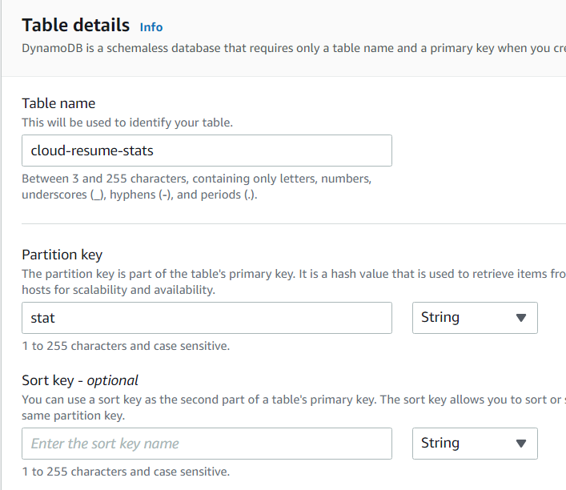

Visitor Counter with JS, Lambda, and DynamoDB
I've been spending a lot of shower-thoughts on what the actual content of my resume page should be. A single-page, hand-written HTML/CSS page would probably be fastest, but I'd also like to explore using a static-site generator. But then, do I port my whole site/blog over to that static-site format? And also, what should the actual layout/priority of the resume page be? While I stew on such things, I'm going to continue implementing the functions of the Cloud Resume Challenge that implement an on-site visitor counter.
DynamoDB
Starting off in the DynamoDB Documentation, it seems like our database can, for this use case, be really simple. Possibly just a single table with a single Item consisting of a scalar value (number) that we'll read, increment, and update. Possibly this is oversimplifying things, but let's jump in assuming things will be simple. We can see how wrong we are later.
Assuming at some point I might want to track some other kinds of stats for this site, I'll create a table called "cloud-resume-stats" with a partition key called "stats" from the DynamoDB UI. At first, the only "stat" will be the visitor count, but perhaps there will be other things to track later. Or not.

As recommended in the Cloud Resume Challenge, I'll select to use Dynamic Pricing - since I imagine very few reads/writes overall, this should end up costing me close to nothing.
With the table setup, I'll add a single Item with the stat "view-count" and starting at quantity zero. This for now will be the only item in our database, and will track our view-count.

Well, I guess that's the table set up, for now. Now let's look at modifying the data in that table with a Lambda serverless function.
Lambda Function
Going into Lambda function UI in the AWS console and clicking 'Create Function' gives us a variety of selections and default options. I'll create a new function with a Python 3.9 runtime (since I'm more comfortable in Python than in Node, Ruby, or Go for example). I'll also take advantage of the option to create a new IAM role based on templates to make a new role with the "Simple Microservice Permissions" policy for lambdas; I'll need to inspect those permissions a little closely later on.
From the little I'd looked into using AWS Lambdas before, I don't recall the nifty visual input/output editor that pops up here - neat! Let's see what our options are for triggers.
It looks like one of the options for triggers is via the AWS API Gateway, which is handy, since that's another piece of the Cloud Resume Challenge. And when selected, an option appears to select an existing API... or create a new one right here. Well that's handy.

As for what the difference is between an HTTP API and a REST API in this context, I'll have to consult Amazon's Choosing an API Type documentation, and the related Choosing Between HTTP APIs and REST APIs document. Given that both options appear to allow requests from public HTTP endpoints, and the HTTP API is described as "lightweight" (as opposed to the REST API's "feature rich"), I think that's where I'll start.
The next question is "Security," which sounds like an important... so what the heck is a JWT authorizer??

Another Amazon guide to the rescue: Controlling Access to HTTP APIs with JWT Authorizers. It seems that JWT is JSON Web Token, and is part of a method of validating requests to API's using OATH or OpenID connect. Since biting off a full mouthful of OATH is probably more than I should try to tackle at this stage, I'll leave the API open for now, and look into whether rate-limiting requests to it/the Lambda function/the database is an option.
Finally, I'll enable Cross Origin Resource Sharing to allow access to the API from outside the domain of the lambda... I think. I'm not entirely sure if this will be necessary, since I'll be accessing this lambda from within my own site in the S3 bucket I own. But I'll turn it on for now.
I now have a long, auto-generated endpoint name for the API associated with this Lambda - I'll want to see later about reconfiguring that to be somewhat more readable, but all in good time. Let's get back to writing that Lambda function.
What I'll want is to be able to make a request to the API endpoint which accesses the current visitor count stored in our database, increments it by one, stores that value back in the database, and returns the new value to the frontend. There's some handy starter code over in some DynamoDB documentation; let's just start by seeing if we can retrieve the value of the visitor count from our table:
And we can see in the response results that yes, indeed, we're pulling the results out of our database as expected:
(Another handy resource was this gist to list all available Python libraries in the default Python environment)..js">
And now, via the magic of the the AWS API's ADD action, we can write the increment action as follows, returning the resulting new viewpoint to the API: Alright, we can call this API endpoint and get an incremented and update viewcount back. That's good. But that URL sure is ugly - it'd be nice if I could target something like api.jeff.glass/incrementViewcount. Let's see if that's possible. Apparently, this requires a certificate for that domain in the Amazon Certificate Manager. I had hoped I could use the certificate I used for Cloudfront certification, but since that's in the us-east-1 region and the lambda is in us-east-2, it looks like I'll need another certificate. No worries though; it's easy enough to do that via the prompt in the API Gateway UI.Currently, any request type to the API endpoint will return this incremented information - for cleanliness, I'll make it so only a GET request actually causes this to happen. Any other request type returns a 403 response code via another (very simple) Lambda.

I've also redirected api.jeff.glass to this API endpoint to hopefully make things cleaner, using the Custom Domain Names section of the UI and a new CNAME entry in my DNS manager pointing to the API ARN. And while I seem to able to query the enpoint via that URL, all I'm getting is Status 500 Internal Server Errors. This AWS help article implies that's an issue with permissions, but I'd have thought (and the UI seems to confirm) that by configuring the API Gateway when I create the Lambda functions themselves, the appropriate permissions/roles should be automatically created. When I go to check the logs, it seems I'll need to have a Cloudwatch resource of some kind as a destination for them. So, over to Cloudwatch it is.
Creating a new Log Group is straightforward, with all the default options. Feeding that ARN into the API Gateway's settings allows logs to start popping up whenever I hit the API endpoint. And, as expected, I'm seeing 500-status errors in the logs as well:
At least I can confirm that the API Gateway is seeing a GET request as expected. Ah, and if I make a request to https://api.jeff.glass/incrementViewcount, i get the incremented and returned view count as expected. And if I configure the /error URL to trigger the seperate error lambda (which just returns code 403), I can trigger that as well. But clearly there's something I don't understand about the way the /ANY route acts to route to integrations. When I create a route like ANY /{greedy}, the Cloudwatch logs do show the correct route being selected. But I still get a code 500 internal server error, as if the Lambda itself isn't running. On the other hand, this additional error handling Lambda is overkill, so I can just bin it. I'll make a mental post-it note to deepen my understanding of the ANY and {greedy} functionality though.